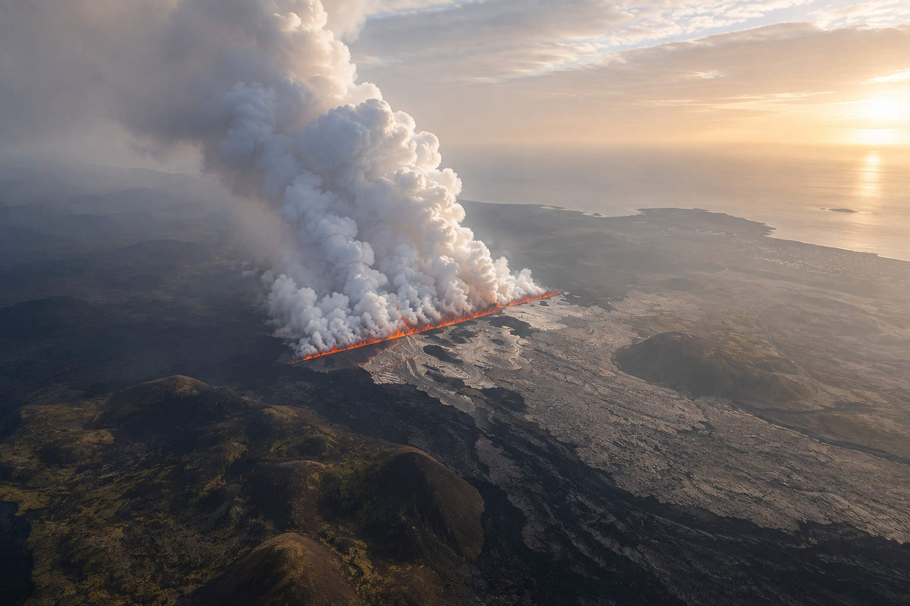
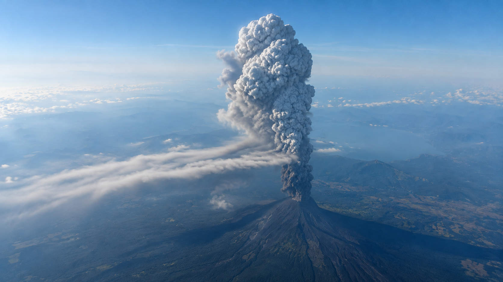
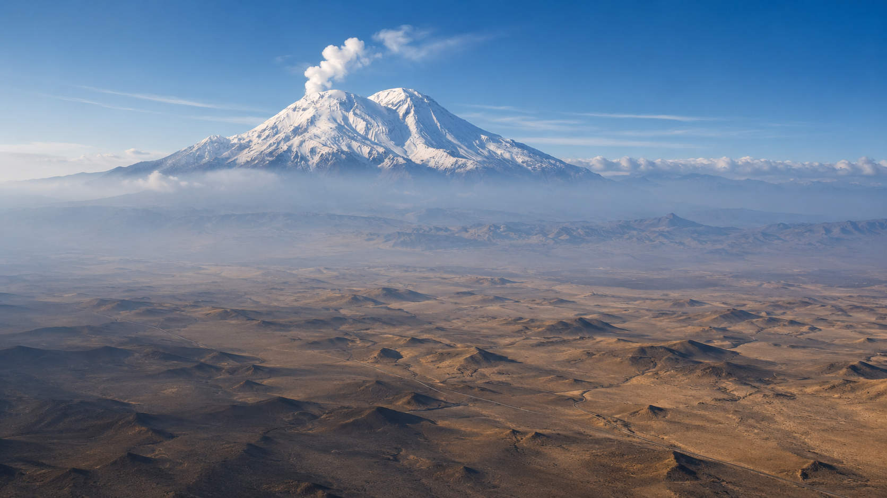
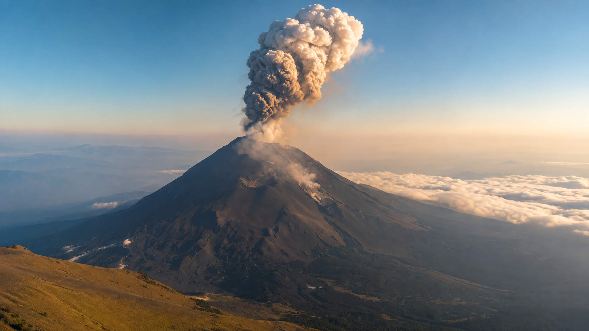
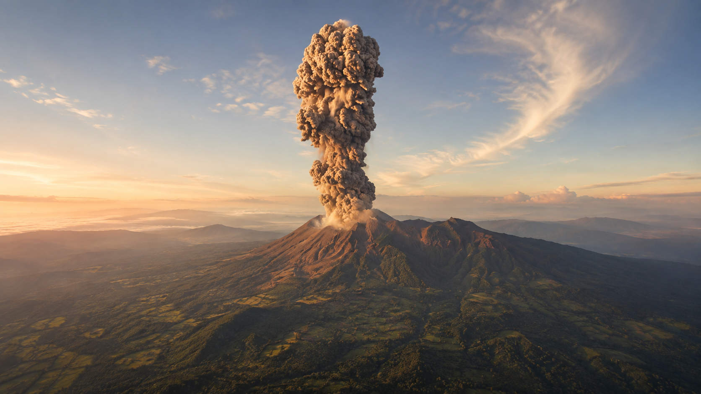
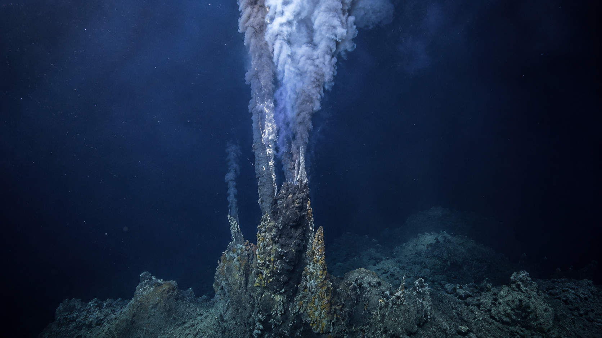

En apenas ocho meses, el planeta registró diez sismos de magnitud 7.0 o superior: Malasia, Tonga, Vanuatu, Indonesia, Japón, Filipinas, Venezuela, México, Colombia y, de nuevo, Indonesia. Las imágenes de destrucción circularon en redes casi en tiempo real, y con ellas volvió una pregunta que reaparece cada vez que hay un clúster de terremotos visibles: ¿se acerca el "Big One", el gran sismo que, según el imaginario popular, pondría fin a una era?
La respuesta corta es que no existe, en la literatura científica, un "Big One" único y global. El término nació en California, para describir un evento muy concreto en la falla de San Andrés, y se ha ido tomando prestado —con significados distintos— para describir riesgos sísmicos regionales en Cascadia, Filipinas y otros puntos del Anillo de Fuego. Son varios "Big Ones", no uno.
Este artículo separa lo verificable de la especulación: de dónde viene el término, qué dice el USGS sobre el clúster de 2026, el catálogo completo de los diez sismos M7+ del año con su mapa de epicentros, una línea de tiempo de grandes terremotos históricos —con foco en Centroamérica—, el saldo humano de cada sismo reciente, y un repaso a la actividad volcánica global que suele mencionarse en el mismo aliento.
¿Existe un "Big One" global?
La expresión "The Big One" no nació como una profecía apocalíptica sobre el planeta entero: nació en California. Es el nombre con el que sismólogos y prensa estadounidense bautizaron a un evento muy concreto y localizado — una ruptura mayor de la falla de San Andrés, el sistema de falla transformante que atraviesa California de sur a norte. La referencia histórica que el imaginario popular asocia a ese término es el terremoto de Loma Prieta de 1989 (M6.9), que interrumpió la Serie Mundial de béisbol en San Francisco y disparó las advertencias sobre "el grande" que faltaba por venir a lo largo de esa falla.
Con los años, el término se extendió —y se deformó— hacia otros contextos geográficos con dinámicas tectónicas completamente distintas. No es un solo riesgo: son varios, cada uno con su propia falla y su propio horizonte de probabilidad.
| "Big One" | Falla / zona | Estimación científica |
|---|---|---|
| California | Falla de San Andrés (transformante) | Ruptura mayor prácticamente segura a largo plazo, pero sin ventana de tiempo precisa —"podría ser en 100 años, podría ser mañana" |
| Cascadia (EE. UU./Canadá) | Zona de subducción de Cascadia | 37%–43% de probabilidad de M8.0–8.6 (hasta 9.0+) en los próximos 50 años |
| Filipinas | Falla del Valle Oeste, bajo Metro Manila | Ruptura esperada estimada en M7.2 |
¿Y el reciente enjambre de sismos M7+ confirma que "todo está conectado"? Es la pregunta que más circula en redes tras la seguidilla de sismos de este año. Según el consenso científico disponible, la respuesta corta es no —al menos no hay evidencia de eso.
📊Síntesis científica del clúster de 2026Sí hay "Big Ones" —plural, regionales, cada uno con su propia falla y su propio riesgo estudiado desde hace décadas—, pero la idea de un "Big One" planetario, sincronizado y detonado por la actividad reciente, no tiene respaldo en la literatura sismológica. Lo que sí ha cambiado es la cantidad de gente viviendo en zonas de riesgo sísmico y la velocidad con la que la información —y la desinformación— circula cuando ocurre un clúster visible en redes sociales.
Catálogo completo: los diez sismos M7+ de 2026
Según el catálogo del USGS Earthquake Hazards Program, hasta el 15 de agosto de 2026 se registraron diez sismos de magnitud 7.0 o superior en el mundo, ninguno de magnitud 8 o mayor.
| # | Fecha 2026 | Lugar | Magnitud | Profundidad | Notas |
|---|---|---|---|---|---|
| 1 | 22 feb | Sabah, Malasia | M7.1 | 629 km (foco muy profundo) | Primer M7+ en 250 km desde 1950 |
| 2 | 24 mar | Tonga | M7.5 | 234 km (intermedio) | Subducción hacia el oeste |
| 3 | 30 mar | Vanuatu | M7.3 | 121 km | Límite Australia-Pacífico |
| 4 | 1 abr | Indonesia (mar de Molucas) | M7.4 | 35 km | Zona tectónicamente compleja |
| 5 | 20 abr | Japón (fosa de Japón) | M7.4–7.5 | 25–35 km | Tsunami de 80 cm, 10 heridos |
| 6 | 7-8 jun | Filipinas (Mindanao) | M7.8 | 57 km | La mayor del año; ~15M expuestos |
| 7 | 24 jun | Venezuela (Yaracuy/La Guaira) | M7.2 + M7.5 | 28 km / 10 km | Doblete, 39 s de diferencia |
| 8 | 17 jul | México (costa de Chiapas) | M7.3 | 22 km | Subducción de la placa de Cocos |
| 9 | 10 ago | Colombia (Chocó) | M7.4 | ~100–110 km | El mayor del siglo XXI en Colombia |
| 10 | 15 ago | Indonesia (Flores) | M7.7 | 10–15 km | Alerta de tsunami; 341 réplicas |
// Fuente: USGS Earthquake Hazards Program — la cifra de ~16 sismos M7+ al año es el promedio histórico mundial que usa el propio USGS para contextualizar este clúster.
Mapa interactivo de epicentros
Los diez epicentros del catálogo, ubicados sobre el mapa mundial —desde Malasia hasta Colombia, pasando por el Anillo de Fuego del Pacífico y el arco del Caribe. Toca cada punto para ver el detalle de magnitud, profundidad y fecha.
Línea de tiempo: de 1972 a 2026
Selección de grandes terremotos de referencia histórica global e hispanoamericana, con énfasis en Centroamérica —donde la magnitud, por sí sola, no siempre predice la letalidad de un sismo.
Crónica 2026: víctimas y desplazados
Con todo el respeto que merece cada una de las comunidades afectadas, este es un resumen —no exhaustivo— de los sismos de este año que dejaron muertos, heridos o desplazados, según los balances oficiales más recientes disponibles al cierre de esta nota. Las cifras de sismos en curso pueden haber subido para cuando leas esto.
Volcanes: panorama global y reactivaciones
Los sismos no vienen solos en el imaginario del "planeta despertando": la actividad volcánica suele mencionarse en el mismo aliento. Según el Global Volcanism Program (GVP) de la Institución Smithsoniana —la base de datos de referencia mundial, compilada junto con el USGS—, hay aproximadamente 1,214 volcanes considerados activos por haber entrado en erupción durante el Holoceno (últimos ~11,700 años), de los cuales 853 tienen erupciones confirmadas y documentadas. En un momento dado suele haber entre 40 y 50 volcanes en erupción continua, de los cuales unos 20 expulsan material activamente en cualquier día concreto. Durante 2025 se confirmaron 71 erupciones en 63 volcanes distintos. El propio GVP responde de forma directa a la pregunta de si la actividad volcánica global ha aumentado: "No".
La mayoría de estos volcanes se concentra en el Anillo de Fuego del Pacífico, con Indonesia a la cabeza en número de erupciones activas en un momento dado. Lo que sí resulta noticioso —y merece precisión— es un puñado de reactivaciones documentadas científicamente entre 2023 y 2026:







La definición tradicional de "extinto" —sin erupciones en el Holoceno, unos 11,700 años— está siendo cuestionada por varios vulcanólogos a partir de casos como Methana y Taftán, que sugieren que algunos volcanes pueden acumular magma en silencio durante decenas o cientos de miles de años antes de despertar. Ninguno de estos casos, sin embargo, sugiere una relación causal entre el clúster sísmico de 2026 y la actividad volcánica global.
Voces sin sensacionalismo
Frente a titulares sensacionalistas sobre "el fin de los tiempos" o "el planeta despertando", vale la pena seguir a divulgadores que abordan el tema sísmico con matices y rigor técnico.
Conclusión: qué dice realmente la ciencia
El planeta tiembla constantemente: eso no ha cambiado. Lo que sí ha cambiado es cuánta gente vive hoy en zonas de riesgo sísmico y con qué velocidad la información —y la desinformación— circula cuando ocurre un clúster de sismos visibles en redes sociales. Diez sismos M7+ en ocho meses es, según el propio USGS, un número dentro del rango histórico esperable, no evidencia de un "despertar" planetario ni de un "Big One" único e inminente.
Eso no resta gravedad al sufrimiento real detrás de cada cifra: Venezuela, Colombia y Filipinas atraviesan procesos de reconstrucción después de pérdidas humanas enormes. La ciencia sísmica —con sus catálogos, sus estudios de probabilidad regional y su monitoreo constante— sigue siendo la herramienta más confiable para entender el riesgo real, muy por encima de cualquier relato de conexión global sin respaldo empírico.
// Para llevarse de este artículo
- No existe un "Big One" único y global: son varios riesgos regionales —California, Cascadia, Filipinas, entre otros— con sus propias fallas y probabilidades.
- El USGS registró diez sismos M7+ en el mundo hasta el 15 de agosto de 2026, ninguno de magnitud 8 o mayor —dentro del promedio histórico de ~16 al año.
- Estudios independientes (Parsons/USGS 2010; Science Advances 2026) no encuentran evidencia de que los grandes sismos se disparen entre sí a escala global.
- La actividad volcánica global tampoco muestra un aumento anómalo, según el Global Volcanism Program —aunque algunas reactivaciones puntuales (Islandia, Etiopía, Grecia) están obligando a revisar qué significa "volcán extinto".
- La magnitud, por sí sola, no determina la letalidad de un sismo: la profundidad y la ubicación del epicentro —como en San Salvador 1986 o el alud de Las Colinas en 2001— pueden pesar más que el número en la escala.
Fuentes
-
EcoFlowReportaje sobre el temor a un nuevo gran sismo en la falla de San Andrés en California.
-
JezebelCobertura mediática sobre la expectativa pública en torno al 'Big One' californiano.
-
ABC7 Los ÁngelesEstudio que sugiere que una ruptura mayor en California podría producirse antes de lo estimado.
-
ABC7 San FranciscoMisma cobertura del estudio sobre la falla de San Andrés, con declaraciones de sismólogos consultados.
-
NACoAsociaciones de condados de Oregón y Washington estiman entre 37% y 43% de probabilidad de un sismo M8.0–8.6+ en la zona de subducción de Cascadia en los próximos 50 años.
-
ScienceDirectFactors affecting intention to prepare for mitigation of "the big one" earthquake in the PhilippinesEstudio académico sobre la preparación pública ante el 'Big One' filipino, la ruptura esperada de la falla del Valle Oeste bajo Metro Manila.
-
NBC NewsEl sismólogo Tom Parsons (USGS) concluye que el clúster de grandes sismos de 2004-2010 (Sumatra, Chile, Haití) se explica por azar estadístico.
-
NBC NewsRevisión de 110 años de registros sísmicos mundiales; resultados mixtos sobre si existen 'eras' de grandes terremotos.
-
GizmodoEstudio en Science Advances (feb. 2026) que cuestiona la idea de ciclos predecibles en los grandes sismos de la falla de San Andrés.
-
Insider PaperCompilación periodística de los diez sismos M7+ de 2026, con declaraciones del USGS sobre el promedio histórico de ~16 sismos M7+ al año.
-
USGSCatálogo oficial del USGS de sismos de magnitud 7.0+ registrados en el mundo durante 2026.
-
Wikipedia (en)Ficha del sismo de Sanriku (Japón, 20 abril 2026), M7.4–7.5, con datos de tsunami, heridos y enjambre precursor.
-
Wikipedia (es)Ficha sobre los terremotos de Venezuela de 2026 (doblete Yaracuy/La Guaira).
-
CNN en EspañolCobertura del sismo de magnitud 7.4 en Chocó, Colombia (10 de agosto de 2026).
-
La JornadaCobertura del sismo de magnitud 7.7 frente a la isla de Flores, Indonesia (15 de agosto de 2026).
-
Wikipedia (es)Ficha sobre el terremoto de Flores de 2026.
-
Wikipedia (en)Ficha sobre el terremoto y tsunami de Flores de 1992, con cerca de 2,500 muertos — antecedente histórico de la misma zona.
-
CNN en EspañolCobertura del sismo de Indonesia de agosto 2026, con referencia al tsunami de Sumatra-Andamán de 2004.
-
Diario de CuyoCobertura del tsunami de Palu-Donggala, Indonesia (2018).
-
Diario de CuyoCobertura del tsunami del estrecho de la Sonda tras la erupción del Anak Krakatoa (2018).
-
Wikipedia (en)Ficha sobre el sismo de Flores de 2021, sin víctimas graves.
-
Wikipedia (en)Listado de terremotos de 2024, incluyendo el sismo de Noto, Japón (M7.5), el más letal de ese año.
-
Wikipedia (es)Ficha sobre el terremoto de Mindanao de 2026 (Filipinas), M7.8.
-
Global Empowerment MissionOrganización humanitaria reporta más de 45,000 personas desplazadas tras el sismo de Mindanao.
-
CNN en EspañolCobertura de CNN en Español sobre el sismo de magnitud 7.8 en Filipinas y su saldo de muertos.
-
Wikipedia (es)Ficha sobre los terremotos de Venezuela de 2026.
-
Noticias ONUNaciones Unidas coordina ayuda de emergencia internacional tras el desastre sísmico en Venezuela.
-
Univision (N+)Actualización del balance oficial venezolano: 1,943 muertos y 10,571 heridos hacia el 30 de junio de 2026.
-
Univision (N+)Cobertura sobre la magnitud de la tragedia en Venezuela, con más de 50,000 personas reportadas como desaparecidas.
-
Cuentas VenezuelaRecuento de cifras del sismo de Venezuela: daños, estados afectados y edificios colapsados.
-
RTVCCobertura del primer día de labores de rescate en Venezuela, con un balance inicial de 188 muertos.
-
InfobaeBalance inicial del sismo de Colombia: más de 130 muertos y 570 heridos.
-
InfobaeActualización del balance del sismo de Chocó, Colombia, al 14 de agosto: 289 fallecidos.
-
El ColombianoActualización adicional sobre la cifra de muertos por el terremoto en Colombia.
-
SemanaCobertura de cómo Colombia afrontó el sismo del 10 de agosto de 2026.
-
InfobaePrimer reporte de la UNGRD sobre el temblor de magnitud 7.4 en Colombia, con derrumbes en Cali y Manizales.
-
CNN en EspañolResumen de CNN sobre las labores de rescate y recuperación en Colombia hacia el 14 de agosto.
-
France 24Cobertura del sismo de Indonesia con al menos 51 muertos y miles de evacuados.
-
El ColombianoCobertura del sismo de magnitud 7.7 en Indonesia, con al menos 40 muertos.
-
La JornadaCobertura de La Jornada sobre el sismo de magnitud 7.7 que sacudió el este de Indonesia.
-
La OpiniónActualización del balance en Flores, Indonesia: 68 muertos y más de 200 heridos.
-
Listín DiarioBalance sobre el sismo de Indonesia: medio centenar de muertos, 135 heridos y 5,000 evacuados.
-
Global Volcanism Program (Smithsonian)Global Volcanism Program (Smithsonian): cifras oficiales sobre el número de volcanes activos en el mundo.
-
MeteoredNota periodística que recoge las cifras del Global Volcanism Program sobre volcanes en erupción activa.
-
Global Volcanism ProgramBase de datos del GVP sobre erupciones documentadas durante 2025.
-
Muy InteresanteNota sobre la concentración de volcanes activos en el Anillo de Fuego del Pacífico.
-
IcelandiaCobertura sobre la erupción volcánica en curso en Islandia.
-
PerlanRecuento de los volcanes activos en Islandia durante 2026.
-
Deccan HeraldCobertura sobre la seguidilla de erupciones volcánicas en Islandia en los últimos tres años.
-
Live ScienceReportaje sobre volcanes 'extintos' que podrían estar atravesando un período de acumulación de magma antes de reactivarse.
-
ABC NewsCobertura de un volcán inactivo desde hace 700,000 años que podría reanudar su actividad.
-
Science AdvancesEstudio en Science Advances sobre la reactivación del volcán Methana (Grecia) tras más de 100,000 años de reposo.
-
Earth.comCobertura del estudio sobre el volcán Methana y la posible redefinición del concepto de volcán 'extinto'.
-
Wikipedia (en)Ficha sobre la secuencia de erupciones del volcán Kanlaon (Filipinas) entre 2024 y 2026.
-
VolcanoDBBase de datos de volcanes inactivos, incluyendo el caso de Sinabung (Indonesia).
-
IFLScienceCobertura sobre el volcán submarino Axial Seamount, frente a la costa de Oregón, y su posible erupción en 2026.
-
USGSActualizaciones oficiales del USGS sobre la actividad del volcán Kilauea (Hawái).
-
Earthquake Insights (Judith A. Hubbard y Kyle Bradley)Boletín de análisis técnico sobre sismos recientes, elaborado por Judith Hubbard y Kyle Bradley (Universidad Tecnológica de Nanyang).
-
RT (actualidad.rt.com)Reportaje sobre el 50 aniversario del terremoto de Managua de 1972, uno de los peores desastres de Nicaragua.
-
SciELO Costa RicaEstudio sobre riesgo sísmico en Costa Rica que cita los terremotos de Managua (1972) y San Salvador (1986) como referencia regional.
-
Wikipedia (en)Ficha sobre el terremoto de El Salvador de 1982.
-
Wikipedia (en)Ficha sobre el terremoto de San Salvador de 1986.
-
Bulletin of the Seismological Society of America (GeoScienceWorld)Estudio académico de referencia (Harlow et al., Bulletin of the Seismological Society of America) sobre el terremoto de San Salvador de 1986 y su contexto histórico.
-
Wikipedia (es)Ficha en español sobre el terremoto de San Salvador de 1986.
-
Wikipedia (es)Anexo con el listado histórico de terremotos en Costa Rica, incluyendo el sismo de Limón de 1991.
-
Wikipedia (en)Ficha sobre el terremoto de Nicaragua de 1992, que generó un 'tsunami earthquake'.
-
Wikipedia (es)Ficha de referencia sobre el doblete sísmico del 13 de enero (M7.7) y el 13 de febrero (M6.6) de 2001, con cifras oficiales combinadas de 1,259 fallecidos.
-
InfobaeReportaje del 25 aniversario del terremoto del 13 de enero de 2001, con detalle del alud de tierra en la colonia Las Colinas, Santa Tecla.
-
USGS \u2014 Hawaiian Volcano ObservatoryFuente de la fotograf\u00eda del Kilauea usada en este art\u00edculo, tomada por el ge\u00f3logo K. Mulliken durante el episodio eruptivo 52 (28-29 de julio de 2026). Material de dominio p\u00fablico.
// Los balances de víctimas de sismos en curso (Colombia, Indonesia) cambian día a día mientras avanzan las labores de rescate; las cifras aquí reflejan el último corte disponible al 17-18 de agosto de 2026 y pueden haber subido para cuando leas esto.
// La sección científica sobre el "Big One" se limitó a fuentes de carácter científico o que citan directamente a sismólogos e instituciones (USGS, Caltech, estudios revisados por pares).
// Última actualización: 18 de agosto de 2026.